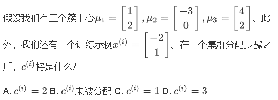

第 61 题
对于以下哪些任务，K-means聚类可能是一种合适的算法？选出所有正确项
查看答案与解析
答案 A、B、E、G
A、G 是没有人群标签的分群，E 可用文本向量发现相似文章并归纳主题。B 若把产品表示成在各购物篮中的出现向量，可以按购买模式聚类。C、D 是数值预测，F、H 是类别预测。
题册勘误 B 的方法取决于任务定义。若目标是直接寻找经常同时购买的商品组合，常用购物篮分析。题干问 K-means 是否可能适用，因此按可构造购买向量的情形计入 B。
手上只有顾客的访问次数和购买次数，没人告诉你顾客类型。怎样根据相似性把他们分成几组？
一组相似的样本叫一个簇，K 是想分出的簇数，μₖ 是第 k 组中心，c(i) 是第 i 条样本分到的组号。K-means 用特征空间中的距离来衡量相似。
二维点 (a,b) 与 (c,d) 的平方距离为 (a−c)²+(b−d)²。比较最近中心时可以省去开平方，排序不变。若各特征尺度相差大，先考虑缩放。
先分配，给每个样本选最近中心。再更新，对每个组内的样本逐个坐标求平均，作为新中心。下一轮样本可以换组。
J = (1/m) ∑i=1m ‖x(i) − μc(i)‖²J 是每个样本到所属中心的平均平方距离，也叫失真。固定中心时选最近点不会让 J 增加，固定分组时用均值更新也不会让 J 增加。
常从数据中随机取 K 个不同样本作初始中心。初值会影响结果，固定 K 时可以多跑几次，选 J 最小的一次。
改变 K 时不能只选 J 最小的方案，因为 K 多了通常就更能贴近训练点。还要结合目标、组间差距和曲线趋势。对新闻做聚类前，需要先把文字变成可比较的数值特征。
点 (1,2) 要在中心 (0,0) 和 (2,2) 之间选择。分去哪个组？
平方距离分别为 1²+2²=5 与 (−1)²+0²=1，因此选中心 (2,2) 所在的组。
先独立作答，再展开解析核对。计算题可以在纸上列式。
对于以下哪些任务，K-means聚类可能是一种合适的算法？选出所有正确项
答案 A、B、E、G
A、G 是没有人群标签的分群，E 可用文本向量发现相似文章并归纳主题。B 若把产品表示成在各购物篮中的出现向量，可以按购买模式聚类。C、D 是数值预测，F、H 是类别预测。
题册勘误 B 的方法取决于任务定义。若目标是直接寻找经常同时购买的商品组合，常用购物篮分析。题干问 K-means 是否可能适用，因此按可构造购买向量的情形计入 B。
有三个簇中心 μ₁=(1, 2)、μ₂=(−3, 0)、μ₃=(4, 2)，还有一条样本 x⁽ⁱ⁾=(−2, 1)。进行一次簇分配后，组号 c⁽ⁱ⁾ 应该是什么？

答案 A
用平方距离比较即可：(−2−1)²+(1−2)²=10，(−2+3)²+(1−0)²=2，(−2−4)²+(1−2)²=37。第二个最小，故 c⁽ⁱ⁾=2。
K-means是一种迭代算法，在其内部循环中重复执行以下两个步骤。哪两个？
答案 A、B
先让每个样本选择最近的中心，更新分组编号 c⁽ⁱ⁾；再把中心 μₖ移到组内样本的平均位置。C 误把均值当成某一条样本，D 颠倒了被分配的对象。
假设您有一个未标记的数据集{x(1),…,x(m)}。你用50个不同的随机数运行K-means初始化，并获得了50个不同的聚类。选择这50个组合中的哪一个的方法是什么？
答案 B
对固定 K 的每次运行，用每个样本到所属中心的平方距离求平均，选误差最小的结果。不需要标签，也不能根据运行次序判断好坏。
以下哪项陈述是正确的？选出所有正确项
答案 A、D、F、G
A 多次随机起点有助于避开坏的局部解；D 分群数取决于结构和任务；F 选不同训练样本作初始中心很常见；G 的分配和均值更新都不会增加目标。B 的同点起始缺少区分，C 忽略分群意义，E 忽略初值，H 忽略下一轮可重分。
先选最近中心，再把组内样本求均值。固定 K 比较多次运行时，选平均平方距离较小的方案。